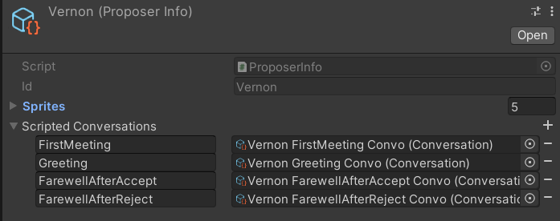
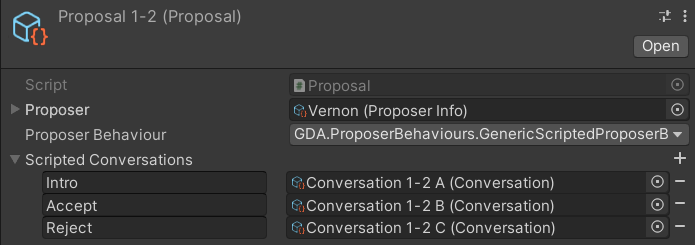
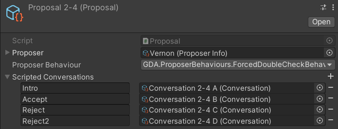
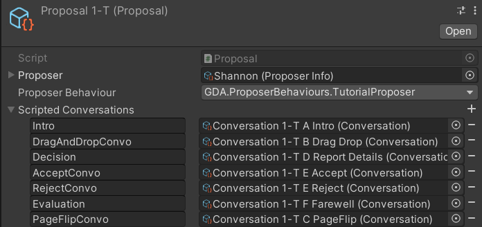
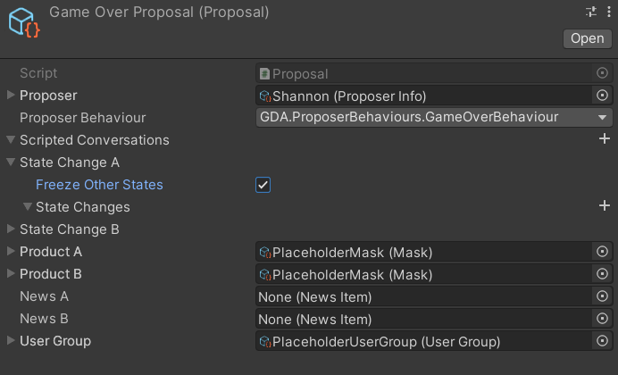

Current Proposer Behaviours
Below are the different proposer behaviors that are current implemented. To create a new custom behaviour, implement a class that inherits from the base ProposerBehaviour class.
Base Proposer Behaviour
The most basic behaviour an NPC can exhibit.
- The NPC enters the office
- The ProposerBehaviour script looks for a scripted Conversation named "Greeting" in the ProposerInfo attached to the proposal. If it is the first time the player is meeting the NPC, the script looks for a Conversation named "FirstMeeting" instead.
- The NPC initiates the scripted Conversation and presents their documents to the player.
- When the player has made a decision and has return all the documents, the ProposerBehaviour script generates some conversation that evaluates the decision of the player.
- After the evaluation is done, the script looks for a Conversation named "FareWellAfterAccept" or "FareWellAfterReject" depending on the player's decision, and the NPC starts the conversation.
- After the farewell, the NPC character leaves.

Generic Scripted Proposer Behaviour
A basic behaviour for scripted conversations specific to a Proposal.
- The NPC enters the office
- The script looks for a scripted Conversation named "Intro" in the Proposal.
- The NPC initiates the scripted Conversation and presents their documents to the player.
- When the player has made a decision and has return all the documents, the script looks for a Conversation named "Accept" or "Reject" depending on the player's decision, and the NPC starts the conversation.
- After the conversation, the NPC character leaves.

Forced Double Check Behaviour
A behaviour similar to the Generic Scripted Proposer Behaviour, but forces the player to reconsider their decision if they reject the proposal.
- The NPC enters the office
- The script looks for a scripted Conversation named "Intro" in the Proposal.
- The NPC initiates the scripted Conversation and presents their documents to the player.
- When the player has made a decision and has return all the documents, if the player Accepts the proposal, the script looks for a Conversation named "Accept", and the NPC leaves after finishing the conversation.
- If the player Accepts the proposal, the script looks for a Conversation named "Reject", and the NPC once again presents the proposal documents to the player.
- When the player has made a decision again and has return all the documents, the script looks for the Conversation named "Accept" or "Reject2" depending on the player's decision, and the NPC starts the conversation.
- After the conversation, the NPC character leaves.

Tutorial Proposer Behaviour
A custom behaviour made for the tutorial. Made to work with a proposal with scripted conversations.

Game Over Behaviour
A custom behaviour made for the game over scenario. Made to work with an empty proposal with placeholder products.
